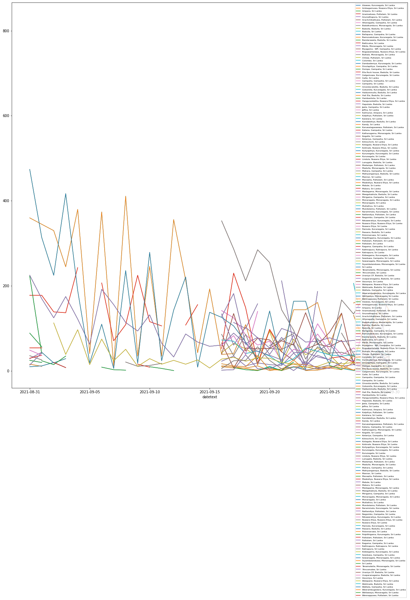

District Wise Infected Count¶
Click the –> Live Code button above on this page, and run the code below.
pivoted = pd.DataFrame(selected.pivot_table(values='counttext', index='datetext', columns='location.formattedAddress', aggfunc='sum'))
#pivoted = pivoted.set_index('datetext')
print(list(pivoted.columns.values))
#print(pivoted)
['Alawwa, Kurunegala, Sri Lanka', 'Ambagamuwa, Nuwara Eliya, Sri Lanka', 'Ampara, Sri Lanka', 'Anamaduwa, Puttalam, Sri Lanka', 'Anuradhapura, Sri Lanka', 'Arachchikattuwa, Puttalam, Sri Lanka', 'Attanagalla, Gampaha, Sri Lanka', 'Badalkumbura, Monaragala, Sri Lanka', 'Badulla, Badulla, Sri Lanka', 'Badulla, Sri Lanka', 'Ballapana, Gampaha, Sri Lanka', 'Bamunakotuwa, Kurunegala, Sri Lanka', 'Bandarawela, Badulla, Sri Lanka', 'Batticaloa, Sri Lanka', 'Bibile, Monaragala, Sri Lanka', 'Biyagama - WP, Gampaha, Sri Lanka', 'Bogawantalawa, Nuwara Eliya, Sri Lanka', 'Buttala, Monaragala, Sri Lanka', 'Chilaw, Puttalam, Sri Lanka', 'Colombo, Sri Lanka', 'Dambadeniya, Kurunegala, Sri Lanka', 'Divulapitiya, Gampaha, Sri Lanka', 'Dompe, Gampaha, Sri Lanka', 'Ella Rock house, Badulla, Sri Lanka', 'Galgamuwa, Kurunegala, Sri Lanka', 'Galle, Sri Lanka', 'Gampaha, Gampaha, Sri Lanka', 'Gampaha, Sri Lanka', 'Girandurukotte, Badulla, Sri Lanka', 'Gokarella, Kurunegala, Sri Lanka', 'Haldummulla, Badulla, Sri Lanka', 'Hali Ela, Badulla, Sri Lanka', 'Hambantota, Sri Lanka', 'Hanguranketha, Nuwara Eliya, Sri Lanka', 'Haputale, Badulla, Sri Lanka', 'Jaela, Gampaha, Sri Lanka', 'Jaffna, Sri Lanka', 'Kalmunai, Ampara, Sri Lanka', 'Kalpitiya, Puttalam, Sri Lanka', 'Kalutara, Sri Lanka', 'Kandaketiya, Badulla, Sri Lanka', 'Kandy, Sri Lanka', 'Karuwalagaswewa, Puttalam, Sri Lanka', 'Katana, Gampaha, Sri Lanka', 'Katharagama, Monaragala, Sri Lanka', 'Kegalle, Sri Lanka', 'Kelaniya, Gampaha, Sri Lanka', 'Kilinochchi, Sri Lanka', 'Kotagala, Nuwara Eliya, Sri Lanka', 'Kotmale, Nuwara Eliya, Sri Lanka', 'Kuliyapitiya, Kurunegala, Sri Lanka', 'Kurunegala, Kurunegala, Sri Lanka', 'Kurunegala, Sri Lanka', 'Lindula, Nuwara Eliya, Sri Lanka', 'Lunugala, Badulla, Sri Lanka', 'Madampe, Puttalam, Sri Lanka', 'Madulla, Monaragala, Sri Lanka', 'Mahara, Gampaha, Sri Lanka', 'Mahiyanganaya, Badulla, Sri Lanka', 'Mannar, Sri Lanka', 'Marawila, Puttalam, Sri Lanka', 'Maskeliya, Nuwara Eliya, Sri Lanka', 'Matale, Sri Lanka', 'Matara, Sri Lanka', 'Medagama, Monaragala, Sri Lanka', 'Meegahakiula, Badulla, Sri Lanka', 'Mirigama, Gampaha, Sri Lanka', 'Monaragala, Monaragala, Sri Lanka', 'Monaragala, Sri Lanka', 'Mullaitivu, Sri Lanka', 'Mundalama, Puttalam, Sri Lanka', 'Narammala, Kurunegala, Sri Lanka', 'Nattandiya, Puttalam, Sri Lanka', 'Negombo, Gampaha, Sri Lanka', 'Nikaweratiya, Kurunegala, Sri Lanka', 'Nuwara Eliya, Nuwara Eliya, Sri Lanka', 'Nuwara Eliya, Sri Lanka', 'Pannala, Kurunegala, Sri Lanka', 'Passara, Badulla, Sri Lanka', 'Polonnaruwa, Sri Lanka', 'Polpithigama, Kurunegala, Sri Lanka', 'Puttalam, Puttalam, Sri Lanka', 'Puttalam, Sri Lanka', 'Ragama, Gampaha, Sri Lanka', 'Rathnapura, Ratnapura, Sri Lanka', 'Ratnapura, Sri Lanka', 'Rideegama, Kurunegala, Sri Lanka', 'Seeduwa, Gampaha, Sri Lanka', 'Sewanagala, Monaragala, Sri Lanka', 'Siyambalanduwa, Monaragala, Sri Lanka', 'Sri Lanka', 'Tanamalwila, Monaragala, Sri Lanka', 'Trincomalee, Sri Lanka', 'Uraniya CP, Badulla, Sri Lanka', 'Uvaparanagama, Badulla, Sri Lanka', 'Vavuniya, Sri Lanka', 'Walapane, Nuwara Eliya, Sri Lanka', 'Walimada, Badulla, Sri Lanka', 'Wattala, Gampaha, Sri Lanka', 'Weerambugedara, Kurunegala, Sri Lanka', 'Wellawaya, Monaragala, Sri Lanka', 'Wennappuwa, Puttalam, Sri Lanka']
# figure size globally set for matplotlib
mpl.rcParams['figure.figsize'] = (20, 20)
mpl.rcParams['axes.grid'] = False
ax = pivoted.plot()
#ax.set_color_palette(sns.color_palette("muted"))
pivoted.plot(ax=ax)
plt.legend(loc='best',prop={'size': 6})
plt.show()
